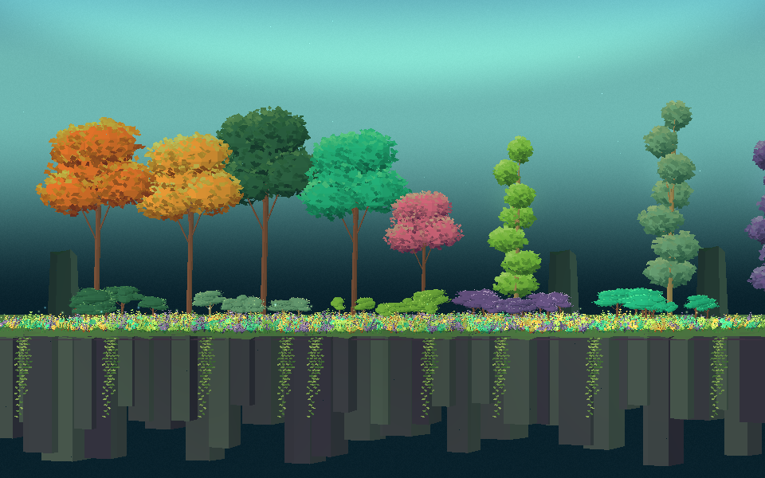
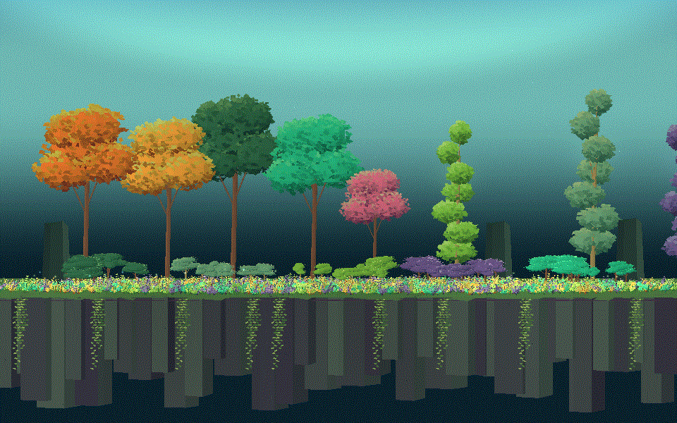

Tracefolio REPORTS & ISSUES
Tracefolio REPORTS & ISSUESPrismatic Woodland 실제 Unity 촬영과 Pixel Camera 전후 GIF
완료Unity6000.0.83f1·DX11·Built-in에서 두 숲 씬을 Play·촬영했습니다. 전후 정지 화면과 실제 움직임 GIF를 공개하며 참고 이미지 대비 외형 차이도 기록합니다.
작업 결과
12-PrismaticWoodland와13-PixelCameraWoodland를 실제 Unity에서 실행하고 각각960×600·24프레임을 촬영했습니다. 사용자 승인 후 기존 격리 QA 프로젝트를 사용했으며 원본 프로젝트의 활성 씬·설정은 변경하지 않았습니다. 촬영·비교 자료 제작 완료이며 참고 이미지와 같은 외형 완성 판정은 아닙니다.
변경 내용
적용 내용

기본 식생 씬입니다. 수목·하층 식생·절벽·덩굴·대기 재질은 Pixel Camera 없이 존재합니다.
같은 구도·출력 크기에360p Full Camera 프리셋을 적용했습니다. 새로운 숲 효과를 생성하는 것이 아니라 최종 화면의 픽셀 표현을 바꿉니다.

앞1.92초는 Pixel Camera OFF, 다음1.92초는 ON입니다. 동일한 수동 바람 시각을 사용합니다. 발광 입자는 일반 Unity 시간에 따라 움직여 완전히 동일한 입자 시각까지 고정한 비교는 아닙니다. GIF는256색 인코딩이므로 색상 판단에는 정지 PNG를 우선하십시오.
검증
현재 제품의 Runtime·샘플·선택 Camera 샘플98개 파일과 격리 QA 복사본의 SHA-256이 일치합니다. 두 씬의 Play에서 각각24개 서로 다른 PNG를 생성했고, 조합 GIF도48개 서로 다른 프레임·960×600·3.84초로 디코딩됩니다. Unity 로그에서 Shader error·C# error·NullReference·MissingReference 메시지가 검출되지 않았습니다.
소스/프레임 검증 · 기본 씬 실행 기록 · Camera 씬 실행 기록 · 실제 ScreenToGif 인코더·GIF 해시
설치 ScreenToGif2.43.2의 기존 공개 LegacyEncoder API로 실제 PNG를 묶었습니다. FFmpeg나 임의로 그린 대체 화면은 사용하지 않았습니다. GIF 약12.5fps 재생은 제품 성능 측정값이 아닙니다. Camera 실행 기록은 source-image 경로와 추가 장면 캡처0회를 보였으나 GPU 성능 개선을 측정한 것은 아닙니다.
교훈 검토: 이번 실제 화면에서 하층 식생의 밝은 점이 과밀하고 참고 이미지보다 색감이 어두운 차이를 확인했습니다. 정적 검증만으로 같은 외형을 주장하지 않는 기존 지침을 유지하며 전역 추가 규칙은 없습니다.
남은 사항
참고 이미지에 비해 현재 하층 꽃은 밝은 점이 촘촘하고 수관·배경의 색감과 부드러운 빛이 다릅니다. 같은 품질로 완성됐다고 판정하지 않았으며 별도 외형 보완이 남습니다. 덩굴·절벽은 정적입니다.
이번 검증은 Windows DX11 Built-in의 두 숲 예제에 한정합니다. URP·HDRP·모바일·실제 프레임률·공식 Validator·전체 제품 설치 검증은 포함하지 않습니다.
정지 화면은 렌더링 원본을 보존해 각각약628KB/346KB로200KB 목표를 넘었습니다. 세부 형태와 픽셀 비교 근거를 보존했으며 별도 리사이즈·이미지 편집은 하지 않았습니다. 조합 GIF는약10.1MB입니다. 기존 소스나 고객 패키지를 수정한 촬영이 아니므로 패키지 재생성은 하지 않았습니다.
작업 시간
- 제안 시간: 실제 실행·오류 확인·정지 촬영·GIF 확인5~10분
- 실제로 완료된 시간: 2026-11-04 03:53:58 KST 계측 시작. 두 씬 촬영은03:56:45 KST에 완료(2분47초). 이후 GIF 생성·프레임 검증·공개 보고서 작성과 배포를 별도로 수행.
- XERJ: 사용 — XERJ 연결 및 ReleasePreviewCapture 검색을 수행했으나 관련 QA 코드가 인덱스 밖이라 현재 촬영 스크립트·Runtime을 rg와 직접 읽기로 확인했습니다. 관련성 없는 검색 결과를 실행 근거로 사용하지 않았습니다.